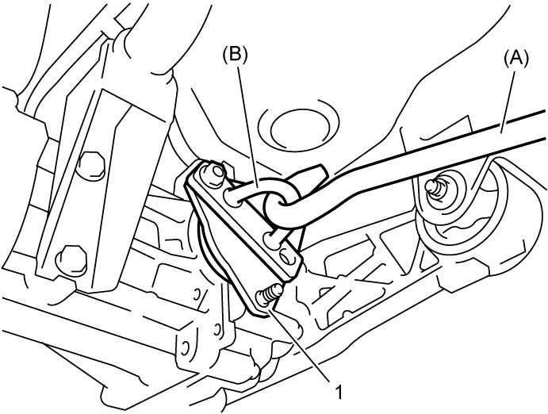
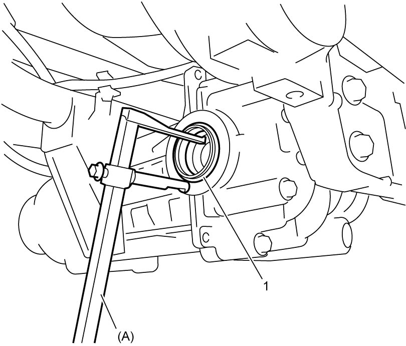
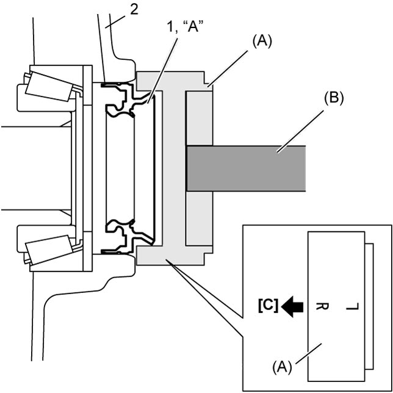

3B
| Rear Differential Oil Seal Removal and Installation |
Removal
1)Hoist vehicle and drain rear differential oil. 
2)Detach rear drive shaft from rear drive shaft flange referring to Step 3) – 4) of Rear Drive Shaft Assembly Removal and Installation:Rear.
3)Install special tool to rear drive shaft flange (1) as shown, and tighten rear drive shaft flange nut (2) to specified torque.


 "Expand image")
4)Pull out rear drive shaft flange (1) using special tools.

 "Expand image")
5)Using special tool, remove oil seal (1) from rear differential (2).

 "Expand image")
Installation
Reverse removal procedure noting the following points.
•Apply grease to new oil seal lip.
•Using special tools as shown, install new oil seal (1) to rear differential until its stepped end becomes flush with end face of the case (2).
•Install rear drive shaft flange to differential after installing new snap ring onto rear drive shaft flange.
•After installing rear drive shaft flange, check that the rear drive shaft flange moves in axial direction a little. If no movement is found, wrong installation of snap ring in rear drive shaft flange is suspected.
In such a case, install rear drive shaft flange again.
•Fill rear differential with oil as specified.
•Using special tools as shown, install new oil seal (1) to rear differential until its stepped end becomes flush with end face of the case (2).

 "Expand image")
| [C]: | Oil seal side |
•After installing rear drive shaft flange, check that the rear drive shaft flange moves in axial direction a little. If no movement is found, wrong installation of snap ring in rear drive shaft flange is suspected.
In such a case, install rear drive shaft flange again.
•Fill rear differential with oil as specified.